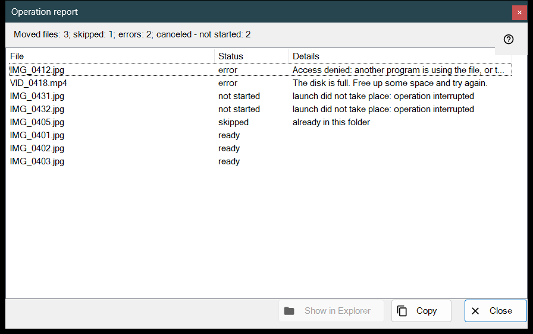
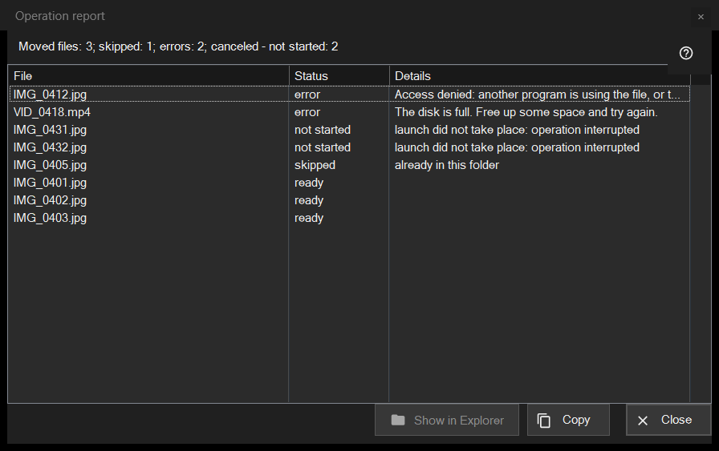

Operation report
What this is for
Lists what happened to every file of the last batch operation (move, copy, delete or undo) and why anything was skipped or failed. It never opens by itself: click the report line at the bottom of the thumbnail panel (F3) after a run. When the run was not clean, the line ends with «click to see details».


In this order
- Run an operation on several files in the thumbnail panel.
- Read the summary line at the bottom of the panel.
- Click the line to open this window.
- Look at the top of the list: failures come first.
- Select rows, then use «Copy» to take their paths or «Show in Explorer» to find a file.
The elements
The summary line
The line starts with the result: «Moved files: 5», «Copied files: 5», «Deleted files: 5», «Restored files: 5» or «Operations completed: 5». Further parts, each with its count, appear only when the count is not zero: «skipped», «errors», «operations without undo», «permanently deleted, cannot be restored», and, when the run stops early, «interrupted, no connection to folder - not started» (three failed connections in a row stop it) or «canceled - not started».
The list
Columns: File, Status and Details. The worst rows come first: failed, then not started, then skipped, then done; inside a group the files keep the order of the run. The tooltip of a row shows the full path. Details give a plain reason for a failure, the destination folder for a finished file, «saved as» and the new name when the old name was taken, and «Deleted permanently - undo unavailable» for a delete that skipped the Recycle Bin.
States and skip reasons
States: «ready», «error», «skipped», «not started». A skipped file says why: «already in this folder», «file no longer on disk», «files inside archive are not modified», «same name already exists among selected files», «resource is read-only», «this is the same file» or «name already taken in destination folder». A file that was not started says «launch did not take place: operation interrupted».
Show in Explorer, Copy, Close
«Show in Explorer» is enabled when a row is selected; it opens a folder window with the first selected file highlighted, or the folder when the file has moved. «Copy» (also Ctrl+C) puts the full paths of the selected rows on the clipboard, one per line, or of all rows when none is selected: a quick way to pass on the list of problem files. «Close» ends the report.